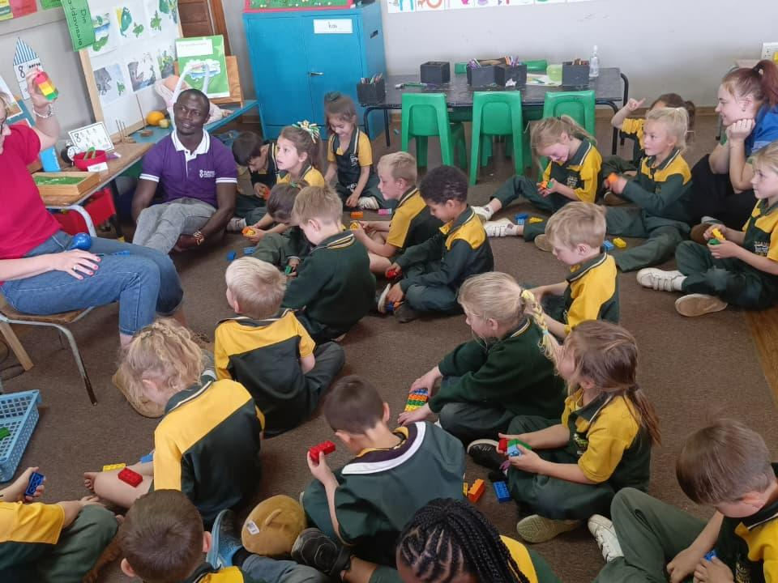
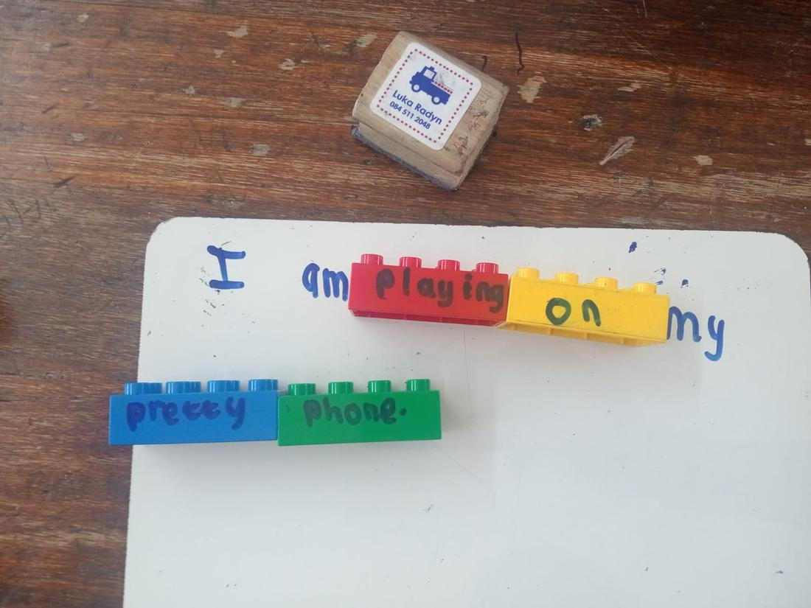
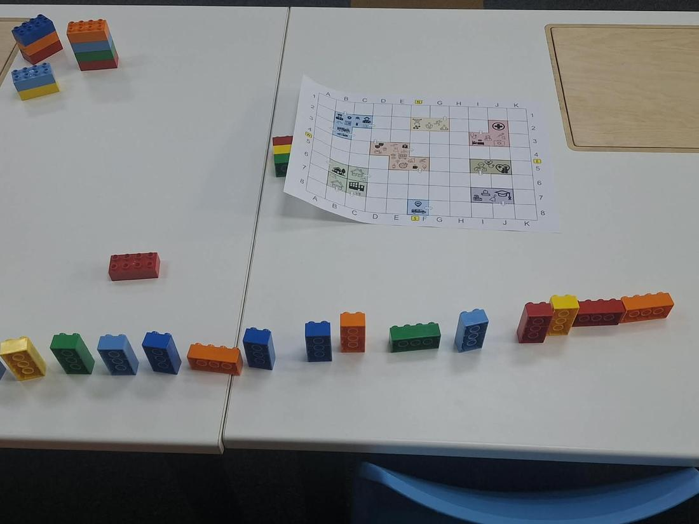
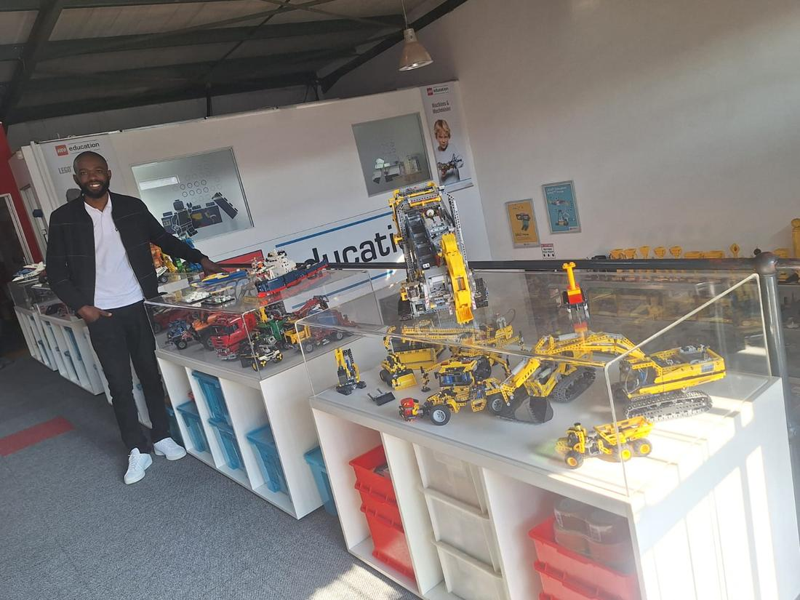
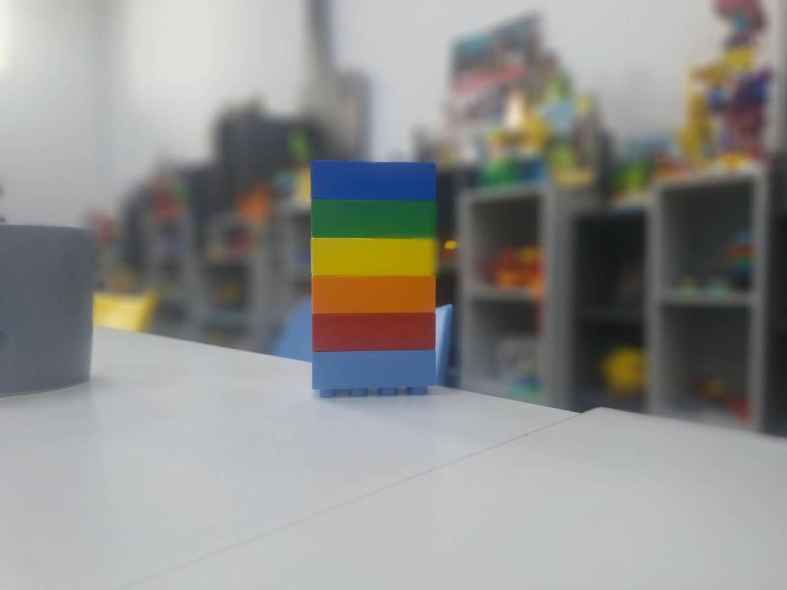
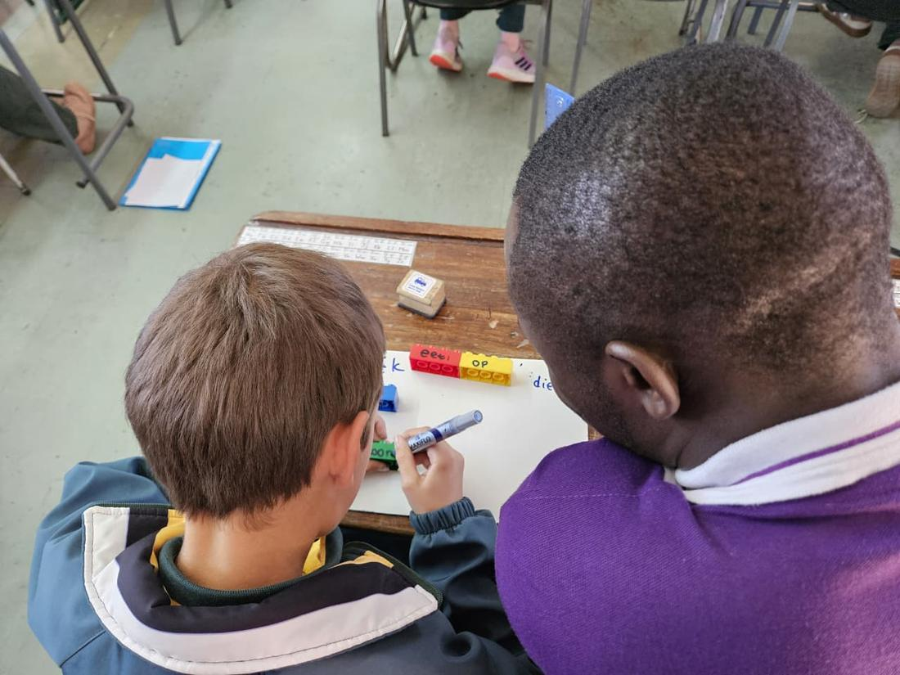
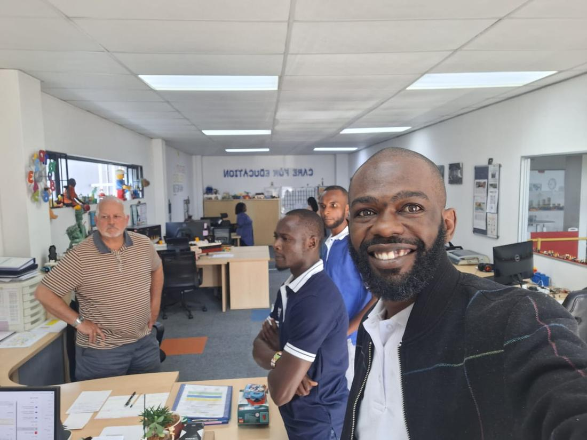

A regional play-based learning initiative
Learning through play, made regional.
One programme. Four strands. Eight countries that already agreed on the destination.
The opening
The region agreed. It just hasn’t reached the classroom.
The 2nd EAC Regional Education Conference put foundational learning, social and emotional learning and parental engagement at the centre of the agenda, and named the same method every time: play.
That consensus is real, it is regional, and right now it lives in communiqués.
The challenge, in numbers
Not behind on coding and robotics. Not started.
Illustrative figures across the eight EAC partner states. These are not four separate problems: a child who cannot read a sequence of instructions cannot debug one.
The idea
Four strands, one pathway
Each strand is structured play with a clear learning target, a teacher script, and simple materials. They share one training pathway and one progress record, so a school runs them as a single programme, not four projects.
Strand 01
Social & emotional learning
Naming feelings, turn-taking, calming routines, friendship and conflict repair. The backbone the other three strands lean on.
- A 20-minute circle game: pass a feelings ball, act out a scenario, agree one class rule.
- No printing. Six Bricks games open and close the circle.

Strand 02
Foundational literacy & numeracy
Letter sounds, decoding, number sense and early operations through games, songs and manipulatives, mapped to the national curriculum.
- Teams build words or number bonds from Six Bricks and bottle-cap tiles against a timer.
- The score is the assessment.

Strand 03
Unplugged coding
Sequencing, loops, debugging and algorithms with no device: floor grids, arrow cards, children as the robot.
- One child writes an arrow-card program, another walks the grid, the class debugs the wrong turns.
- Pure logic, zero electricity.

Strand 04
Robotics
The same computational thinking with a physical build: low-cost motors, recycled materials, one kit shared across a cluster on a rota.
- Strands 03 and 04 are one continuum. Robotics is added when a cluster is ready for a shared kit.
- A school can start with strands 01 and 02 alone.

The method
Play is the spine, not a decoration
Construction, not instruction. Children build understanding by making and re-making, not by being told. Every strand runs on the same five-beat cycle.
The record takes ten seconds per child and feeds one simple progress view, aggregated to class, school and cluster.
What it is built on
Proven methods, packaged
- Six Bricks, an established DUPLO approach for self-regulation, memory, sequencing and early numeracy.
- Floor grids and arrow cards for unplugged coding.
- Bottle-cap tiles for letters and number bonds.
- Recycled-parts builds for robotics.
SELution did not invent these. It packages them into one pathway and one record, adapted to each national curriculum.

The references
Every strand delivers a commitment the region already made
| SEL | Conference emphasis on social and emotional learning and wellbeing. |
| Literacy & numeracy | FLN as the headline conference priority and national foundational-learning targets. |
| Unplugged coding | Digital-skills commitments, framed for classrooms with no devices or power. |
| Robotics | STEM and innovation goals; from consuming technology to building it. |
| Play | The repeated conference call for playful, child-centred pedagogy. |
| Parents | The parental-engagement commitment: take-home prompts and a termly showcase. |
How a pilot runs
A cluster, a term, a clear before-and-after
- Cluster and baseline. 8 to 15 schools in one district; a short play-based assessment.
- Train the trainers. A cascade: master trainers, district facilitators, teachers.
- Run the strands. 3 to 4 short sessions a week; robotics kits on a rota.
- Engage parents. Weekly take-home prompts, a termly showcase.
- Measure and decide. Endline repeats the baseline; scale is a joint call.

Where this is
Early, honest, and already moving
- Teach for Kenya in conversation about hosting a first pilot.
- Interested contacts in Kenya, Uganda, Tanzania and South Sudan.
- Grounded in the 2nd EAC Regional Education Conference agenda.
- Status: seeking pilot funding, one or two district clusters, one to two terms.

The ask, by who you are
Four open conversations
Implementing partners
Host a first pilot in a cluster of your schools; provide teachers for training and coaching. You get a ready curriculum, all materials and the measurement dashboard.
Country contacts
Name a district and a local implementer; open the door to the district office. You get a pilot on a shared regional model with comparable data.
Ministries & EAC
A letter of support, a curriculum officer for the FLN mapping, a seat at the endline review. No pilot-stage cost, full visibility of results.
Funders
Fund one or two district-cluster pilots and the coaching layer; agree the evidence threshold up front. Four-country reach from one comparable design.
Talk to us
Two people, one WhatsApp away.
Message either of us with the district and the partner you have in mind. A first pilot can be scoped in a fortnight.
info@selutionke.com · the full site and concept note are one click away. SELution is an independent regional initiative, not an EAC publication; figures shown are illustrative.